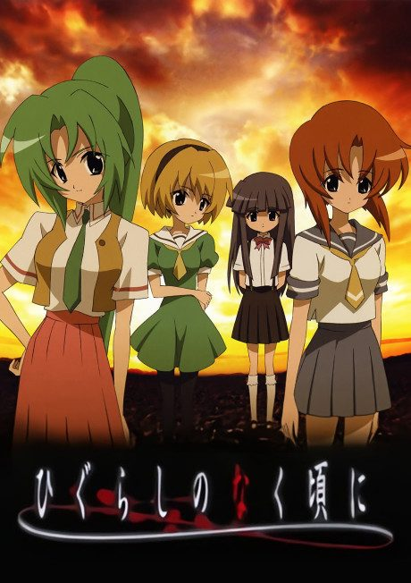

AnimeWhen They Cry
ひぐらしのなく頃に
An original anime, so there's no book to continue with.
7.6AniList
—Animeter
89 ep4 seasons
4 seasons, 89 episodes
In airing order. Episode numbers on this site count straight through every season, so season 2 starts at episode 27.
1
2006 · TV
When They Cry
Episodes1–2626 ep
2
2007 · TV
When They Cry Kai
Episodes27–5024 ep
3
2020 · TV
Higurashi: When They Cry - GOU
Episodes51–7424 ep
4
2021 · TV
Higurashi: When They Cry - SOTSU
Episodes75–8915 ep
Films, OVAs and specials
Not counted in the episode numbers above.
·
2009 · OVA
When They Cry Rei
Sources: AniList